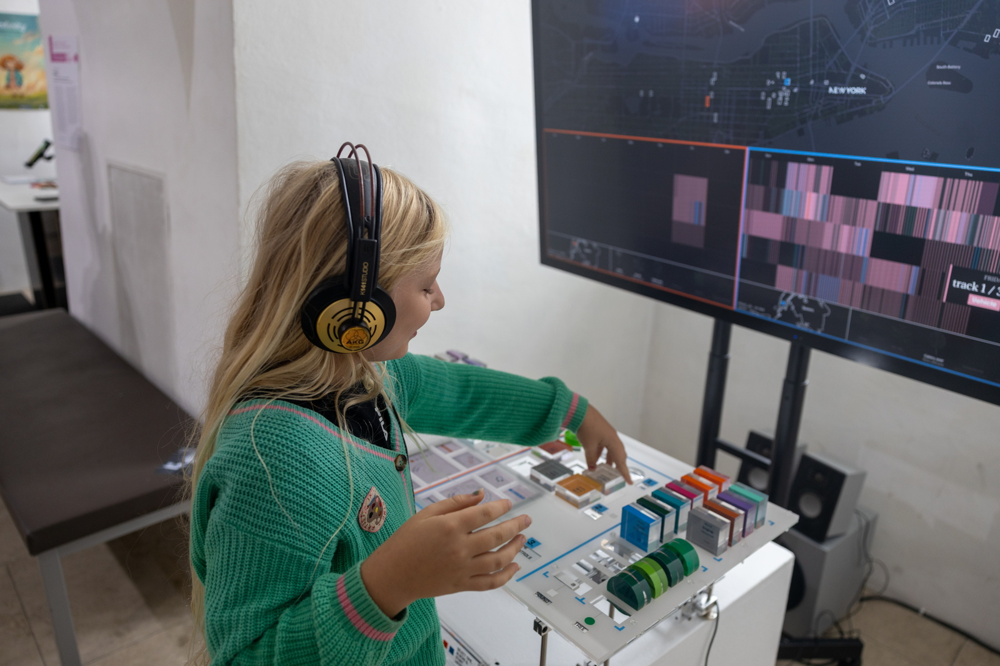

Artwork
Urban Data Orchestra
Cities are increasingly defined by what can be measured — traffic flows, tree inventories, noise complaints. Yet urban life is also something we feel: the quiet of a winter street, the cacophony of a summer afternoon. Urban Data Orchestra explores amplification by making overlooked signals in urban data visible and audible. Rather than treating the city as a collection of measurements to optimize, it invites visitors to uncover and interpret its interconnected rhythms through listening and play. The installation transforms two NYC datasets — the Tree Census and the SONYC soundscape archive — into a sensory instrument for exploring the city. Using plexiglass modules on a split console inspired by mixing interfaces, visitors compose and compare urban soundscapes: neighborhood against neighborhood, March against July. Each sound class and tree species carries its own color, weaving thousands of recorded sounds and seasonal foliage into a tapestry of urban life. Through the arrangement of physical blocks and the selection of locations and time periods, visitors shape real-time audiovisual compositions that bring different layers of the city into dialogue through visualization and sound. Through this process, visitors become composers, assembling and rearranging small compositional “puzzles” to create their own interpretations of the city's spatial, temporal, and ecological rhythms. Rather than revealing a singular representation of urban life, the installation invites multiple ways of listening to, experiencing, and making sense of the city.

A young visitor exploring Urban Data Orchestra at Ars Electronica 2026, Linz, Austria.